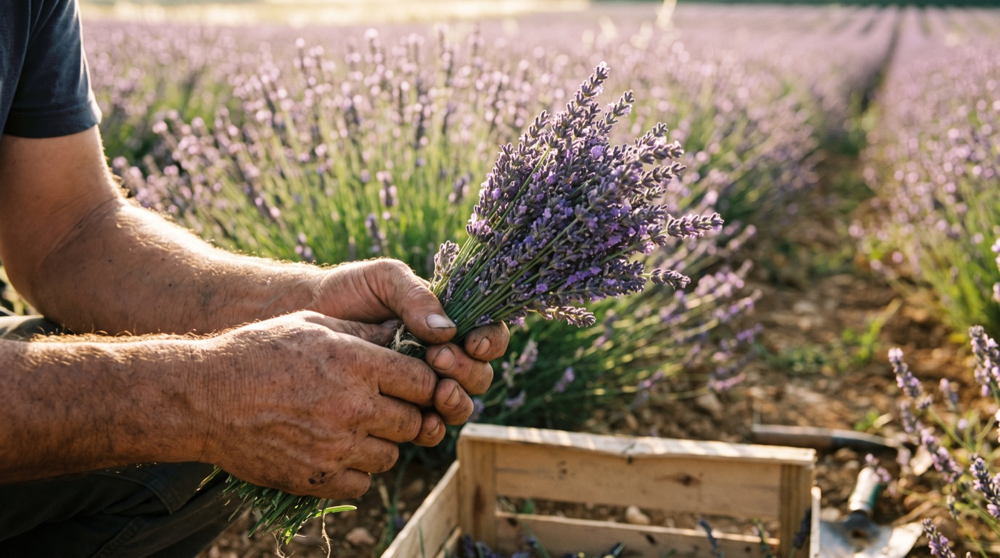

Eden Origin nije počeo kao biznis plan. Počeo je kao zapušteno porodično imanje u Milićevcima kraj Čačka, koje su sestra i brat, Ana i Bojan, hteli da vrate u život. Oboje ekonomisti po struci, mogli su da posade voćnjak kao i svi oko njih. Umesto toga, izabrali su lavandu.
Danas na pola hektara raste 2.500 struka lavande. Sve se radi rukom, berba, sušenje, čišćenje cveta, i bez ijednog hemijskog preparata. To je spor put, ali jedini koji daje cvet dovoljno čist da uđe u flašu.
Bojan: „Najkomplikovanije je pravilno osušiti cvet i očistiti ga tako da ostane samo suvi cvet za liker i sirup. Drugi zahtevan posao je plevljenje 2.500 struka, to radimo isključivo ručno.“
Dve godine da se pronađe ukus
Lavanda je moćna. U preteranoj količini postane sapun, a ne piće. Trebalo je dve godine pokušaja da se pronađe prava mera, i način da se ta aroma pripitomi za koktele i digestiv.
Ana: „Da bismo ublažili jaku aromu lavande u miksologiji, prvi proizvod smo omekšali vanilom, a drugi borovnicom.“
Tako je nastao ViolaVerde, ime spaja violu (ljubičastu boju cveta) i verde (zelenu boju stabljike i lista). Prvi pravi liker od lavande sa vanilom, i njegova borovnica-varijanta. Uz njih ide i Ramonda sirup, bezalkoholni sirup od lavande nazvan po srpskom cvetu koji preživi i najsuvlje leto.

Priznanje koje obavezuje
Rad iz male bašte prepoznat je i izvan Čačka: Ana je, u konkurenciji od 80 prijavljenih, osvojila grant od 10.000 funti za razvoj posla. To je potvrda da priča o lavandi iz Milićevaca ima mesto i na većem stolu.
Za nas to ne menja pristup. Serije ostaju male, berba ostaje ručna, a svaka flaša i dalje dolazi iz istog reda lavande koji plevimo sami.
Ana: „Pre pet godina sanjali smo ovo što je danas. Pet godina učenja, pokušaja i verovanja da lavanda može biti mnogo više od mirisa u kesici. Danas iza nas stoje ViolaVerde i Ramonda, a najlepše tek sledi.“